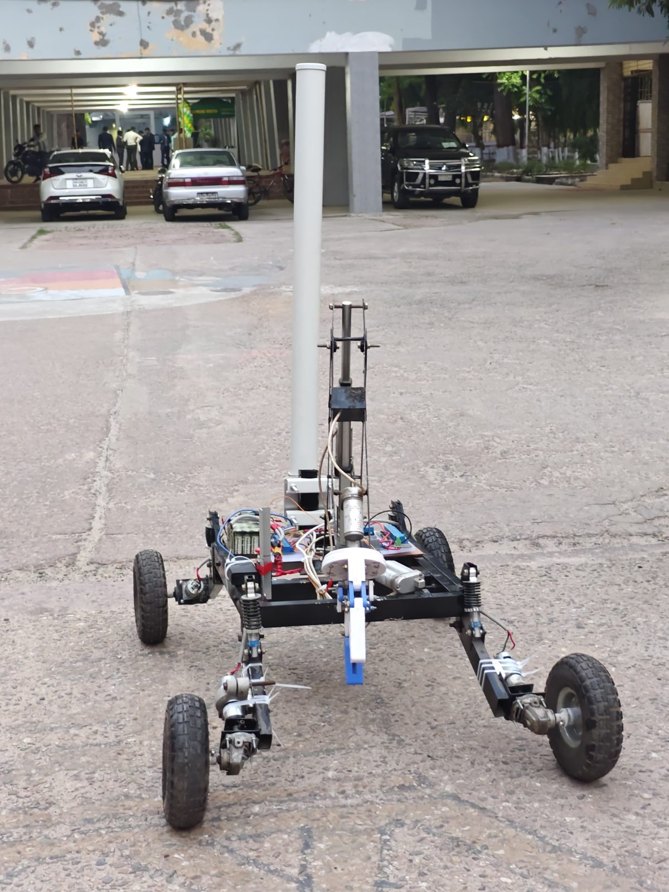

Robotics & autonomy
Navigation, mapping and manipulation on rovers, a quadruped and a delivery robot.
Open to MSc / PhD, Fall 2027
Portfolio · 2026
Mechatronics Engineer · Robotics, Embedded Systems, Vision
I build robots that leave the lab: a Mars rover, a quadruped for disaster response, a stair-climbing delivery robot. B.Sc. from RUET, three IEEE conference papers, and looking for a funded MSc or PhD in robotics.

Navigation, mapping and manipulation on rovers, a quadruped and a delivery robot.
Electrical and drive systems, load control and sensor integration from circuit to chassis.
Real-time human detection, face recognition and on-device keyword spotting.
I am a Mechatronics Engineering graduate of Rajshahi University of Engineering & Technology (RUET), 2019 to 2025, with a CGPA of 3.44/4.00. My work sits where mechanics, electronics and software meet: robots that have to work on real ground, with real batteries and real deadlines.
I led electrical and communication development for Team Ogrodoot, RUET’s Mars rover team, and served as Technical Secretary of the Robotic Society of RUET. Before that I spent a placement at GPH Ispat Limited keeping PLC-controlled steel production lines running.
“Enhance productivity, quality and overall performance through the strategic application of technical expertise and management skills.”Career objective
M. A. T. D. Ul, M. M. Fuad, D. K. Saha and S. H. Abhi, “Advanced Stair-Climbing Delivery Robot with Multimedia Transmission and Client Verification,” 2025 28th International Conference on Computer and Information Technology (ICCIT), Cox’s Bazar, Bangladesh, 2025, pp. 1941–1946.
doi:10.1109/ICCIT68739.2025.11491370 ↗F. Ahsan, N. A. Bhuiyan, M. A. T. D. Ul and M. J. Ahamed, “Hierarchical Vision-Controlled Quadruped Robot for Autonomous Human Detection and Localization in Disaster Response,” 2025 28th International Conference on Computer and Information Technology (ICCIT), Cox’s Bazar, Bangladesh, 2025, pp. 693–698.
doi:10.1109/ICCIT68739.2025.11491754 ↗N. A. Bhuiyan, F. Ahsan, M. A. T. D. Ul and M. J. Ahamed, “Voice-Driven Teleoperation of Wheelchair-Mounted Robotic ARMS Using MFCC and a Quantized Lightweight CNN,” 2025 IEEE 4th International Conference on Robotics, Automation, Artificial-Intelligence and Internet-of-Things (RAAICON), Dhaka, Bangladesh, 2025, pp. 280–283.
doi:10.1109/RAAICON69033.2025.11502251 ↗Nov 2024 – Feb 2025 · Sub-Team Co-Lead, Electrical & Communication
Designed and developed the complete electrical and drive system, giving robust control over the rover prototype. The chassis uses a rocker-bogie suspension so all wheels stay on rough ground.
Implemented a load controller for power management and circuit protection, which significantly improved battery efficiency.
A 5-DOF robotic arm with a 3D-printed gripper handles manipulation, and a 2D LiDAR provides sensing for the rover.
Finalist at the International Rover Challenge 2025 and semifinalist at the International Rover Design Challenge 2025, both run by the Space Robotics Society. I supervised the electrical drive and automation subsystems and coordinated with cross-functional teams and sponsors.
Autonomous robot for multi-story last-mile delivery, built on ROS 2 for motion planning and sensor communication. Face recognition verifies the recipient at hand-over, and live multimedia streaming enables remote monitoring and two-way interaction.
First-author paper →A quadruped that crawls over uneven surfaces to find people in dangerous situations. YOLOv11 on a Raspberry Pi 5 classifies humans in real time, with an Arduino Uno driving the servo legs and GPS-aided localization.
Published paper →Co-authored work on controlling a wheelchair-mounted robotic arm by voice, using MFCC features and a quantized lightweight CNN for keyword spotting that runs on embedded hardware.
Published paper →Designed and modified with a university friend in collaboration with the Bangladesh Army. The drone grabs an object of up to 300 g, flies with it using GPS, and drops it at a suitable place. The project won an award.
A prototype developed for the Bangladesh Army. SLAM and NAV2 give autonomous operation, a 5-DOF arm handles payloads up to 3 kg, and a night-vision camera and ultrasonic radar provide sensing. RUET recognized the work with an award in May 2024.
A PID-controlled robot with an IR sensor array on an Arduino Nano, powered by a modular battery system for fast, stable line tracking.
A mini-scale RC-controlled weaponized robot that won the Beetle Weight Robo Rumble at Tech Mayhem 2023, organised by the Robotic Society of RUET.
Professors and labs: I would value a conversation about funded MSc and PhD positions for Fall 2027 in robotics, embedded systems and vision.